Hurup
Blaugrauer, gestreifter Granit
Höhe: 106 cm
Größte Breite: 98 cm
Runenhöhe ca.: 12,5-17,5 cm
Runeninschrift:
Thormod, ein wohlgeborener
dræng, errichtete dieses
Denkmal für NN seinen
Vater (oder Bruder).
Runenstein (Foto 1988)

18 - Hurup - Letztes Update 05.08.2025
Listennummer : DR 150 / DK NJy 39
Navidaten: 56.75397 8.42559 oder: Kirkevej 42C,
7760 Hurup Thy
Transliteration:
Seite A : þurmuþr : r-...
Seite B -- : þ(i)(s)... | : iftiR | ...þur : sin | kuþr :
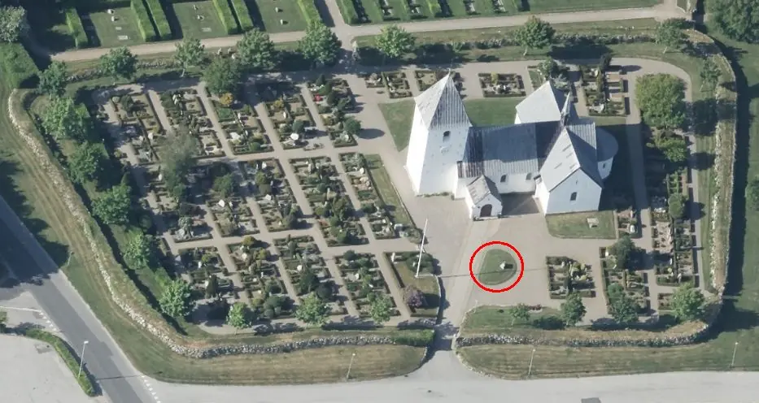
Dies ist ein Luftfoto vom 01.06.2023 von Skråfoto - Lizenz: CC BY 4.0 - das die Kirche von Hurup zeigt. Skråfoto ist eine Webanwendung, die von Klimadatastyrelsen weltweit kostenlos bereitgestellt wird. Die Aufnahmen werden seit 2017 alle zwei Jahre erneuert und neben einer Senkrechtaufnahme wird ein Schrägbild aus jeder Himmelsrichtung angeboten, das man über eine Adresssuche aufrufen kann. Den Standort des Runensteins habe ich rot umrandet.
Der Runenstein, wobei es sich um ein Bruchstück handelt, wurde erst am 27.10.1910 in der Einfriedungsmauer des Kirchhofs von Hurup entdeckt.
Der Arbeiter Anton Nielsen entdeckte bei den damaligen Arbeiten die Runenzeichen auf dem Steinbrocken zuerst. Man verständigte den Arzt Vilhelm Hildebrandt Kjær (*31.10.1876 - 15.08.1952 - link-LIVES), Vorstandsmitglied der Historischen Gesellschaft,
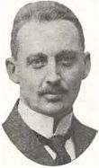
Bildquelle: DEN DANSKE LÆGESTAND 1915-1925 - S. 407 (S. 419 in der pdf-Datei)der seinerseits unverzüglich Kontakt mit dem Nationalmuseum in Kopenhagen aufnahm.
Der Runenstein steht heutzutage im Kirchhof, auf einer Grünfläche unmittelbar vor dem Waffenhaus auf der Südseite der Kirche.
Die Inschrift besteht aus fünf Runenbändern, eines auf der Schmalseite und vier auf der Breitseite. Die Runenlinien sind durch die Bruchstelle nicht mehr vollständig erhalten, wodurch die Deutung der Inschrift erschwert wird. Sie wird auf den Zeitraum 970 bis 1020 datiert. Aufgrund des fragmentarischen Zustands des Steins kann die Reihenfolge der Textzeilen nicht mit Sicherheit bestimmt werden. Nach Erik Moltke (*04.04.1901 - 19.10.1984, Runologe, Historiker - link-LIVES)
 Bildquelle: Scan von Buchumschlag "Runerne i Danmark og ders
oprindelse" - Erik Moltke - 1976 - Lizenz:
CC-BY-SA
Bildquelle: Scan von Buchumschlag "Runerne i Danmark og ders
oprindelse" - Erik Moltke - 1976 - Lizenz:
CC-BY-SA
1985, Runes and their Origin. Denmark and Elsewhere, S.528, Nr. 150 - muss zuerst die eine Linie auf der Schmalseite von unten nach oben gelesen werden - Seite A. Auf der Seite B wird nun die linke Linie von unten nach oben gelesen, die anschließende Linie in der gleichen Richtung, dann aber die rechte Linie von oben nach unten und zuletzt die links davon befindliche Linie wieder von unten nach oben.
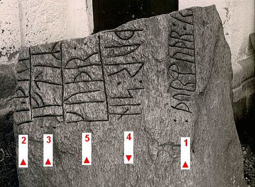
Unmittelbar nach der Erkennung als Runenstein wurde von dem historisch interessierten Arzt Vilhelm Hildebrandt Kjær ein Foto und eine Zeichnung des Steins angefertigt die hier wiedergegeben werden. Doktor Kjær war sehr an dem Fall interessiert und führt im Dezember 1910 selbst eine Vermessung des Steins durch. Er schickt die Maße an Lehrer Hald im Museum in Thisted, mit dem Kommentar, dass es ihm Spaß gemacht hätte, dies zu machen. Heute befinden sich Kjærs Bericht und seine Vermessung im Museum für Thy und Vester Hanherred.
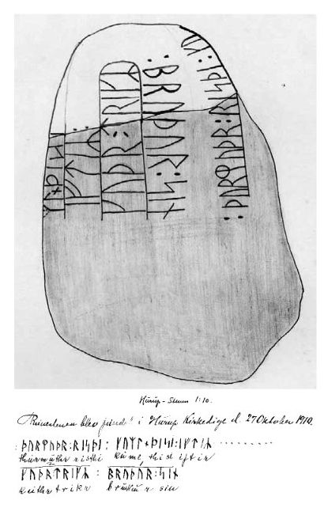
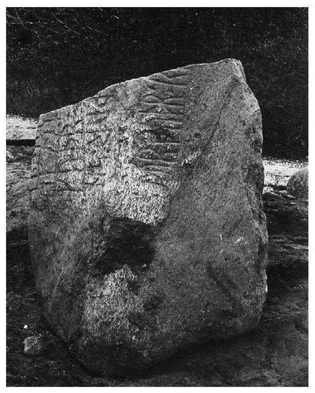
Quelle: Runestenen i Hurup von Jytte Nielsen, Heltborg Museum
In der Zeitung "Thisted Amtsavis, 87. Jahrgang, Nr. 255, Mittwoch, 02.11.1910" findet sich dieser Eintrag:
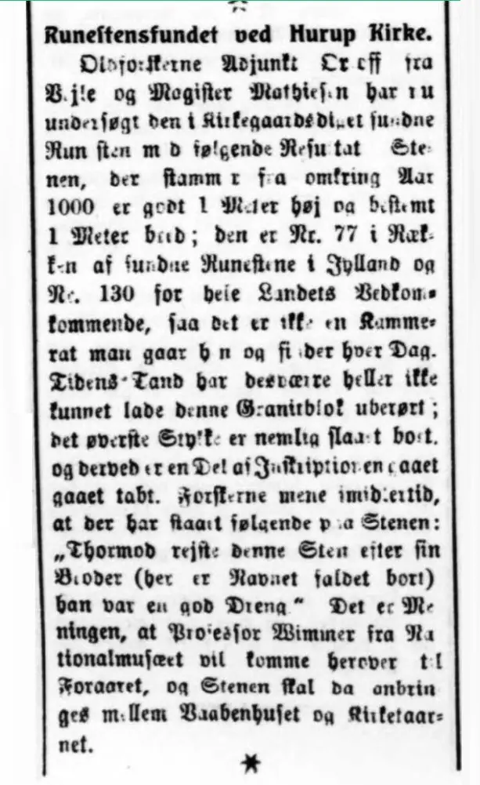
Übersetzung: Runensteinfund bei der Hurup Kirche - Die Altertumsforscher und Lehrer Orluf aus Vejle und Magister Mathiesen haben nun den in der Kirchhofeinfriedung gefundenen Runenstein wie folgt untersucht: Der Stein, der aus der Umgebung stammt, wird in die Zeit um 1000 datiert, ist weit über einen Meter hoch und definitiv einer Meter breit, es ist Nr. 77 in der Fundserie der Runensteine in Jütland und Nr. 130 für das ganze Land, also ein Stein den man nicht jeden Tag findet. Der Zahn der Zeit ließ leider auch diesen Granitblock nicht unberührt. Das Oberteil ist nämlich abgeschlagen und darüber ist die Inschrift nicht eindeutig. Die Forscher gehen jedoch davon aus, dass Folgendes auf dem Stein steht: Thormod errichtete diesen Stein nach seinem Bruder (der Name fehlt aufgrund Abbruch) er war ein guter Junge." Prof. Wimmer vom Nationalmuseum wird im Frühjahr vorbeikommen und der Stein sollte zwischen Waffenhaus und Kirchturm aufgestellt werden.
Frederik Johannes Henrik Orluf (*04.02.1869 -11.09.1954, Lehrer und Hobbyforscher)
 Bildquelle:
Vejle Wiki - Lizenz:
Public Domain
Bildquelle:
Vejle Wiki - Lizenz:
Public Domain
Lis Jacobsen (*29.01.1882 - 18.06.1961, dänische Runologin und Archäologin - link-LIVES - Taufe - Melderegister - Hochzeit)
 Bildquelle:
Wikipedia - Lizenz:
Public Domain
Bildquelle:
Wikipedia - Lizenz:
Public Domain
berichtet im Jahre 1913 in "Aarbøger for nordisk oldkyndighed og historie, 3. Reihe, 3. Band", in ihrem Artikel "Nyfundne Runeindskrifter i Danmark" ab der S. 109 über den Runenstein von Hurup und fügt diese Fotografie und diese Zeichnung mit den Maßangaben an (Inschrift auf den Seiten A und B):
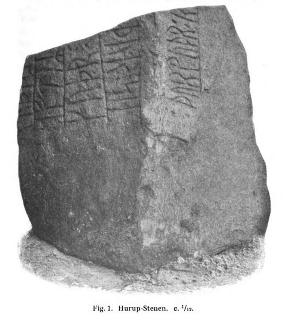
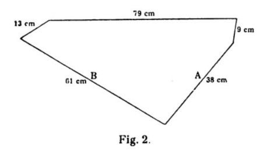
In dem Buch von Prof. Ludv. F. A. Wimmer (*07.02.1839 - 29.04.1920, Philologe und Runenforscher - link-LIVES - Politiets registerblade - Bestattungsprotokoll)
 Bildquelle:
Fotografie zw. 1877-1900 von Fotograf Hansen & Weller
-
Det Kgl. Biblioteks billedsamling - Lizenz:
Public Domain
Bildquelle:
Fotografie zw. 1877-1900 von Fotograf Hansen & Weller
-
Det Kgl. Biblioteks billedsamling - Lizenz:
Public Domain
mit dem Titel "De danske Runemindesmærker, Haandudgave ved Lis Jacobsen" von 1914 wird der Ruunenstein unter der Nummer 251 auf der S. 200 mit der obigen Fotografie geführt.
Hier sieht man eine sw Aufnahme von Erik Moltke (*04.04.1901 - 19.10.1984, Runologe, Historiker - link-LIVES)
Bildquelle: Scan von Buchumschlag "Runerne i Danmark og ders
oprindelse" - Erik Moltke - 1976 - Lizenz:
CC-BY-SA
vom 13.06.1931, bei der die Runenzeichen von ihm nachgezeichnet wurden.
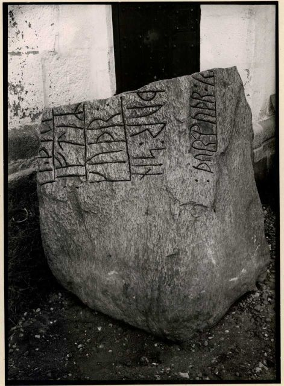
Der digitalen Sammlung des dänischen Nationalmuseums entnommen. - Lizenz: CC-BY-SA
Im Vorfeld zu dem 2016 erschienenen Buch von Lisbeth M. Imer (*1973, Runologin am Nationalmuseum Kopenhagen) "Danmarks Runesten - en fortælling" reiste sie mit dem Fotografen Roberto Fortuna zur Bestandsaufnahme durch die Lande. Dieser hat die Runensteine abends bei Dunkelheit mit Schräglicht aufgenommen und darüber wirklich herausragende Fotos erzielt. Die Aufname stammt aus dem März 2012.
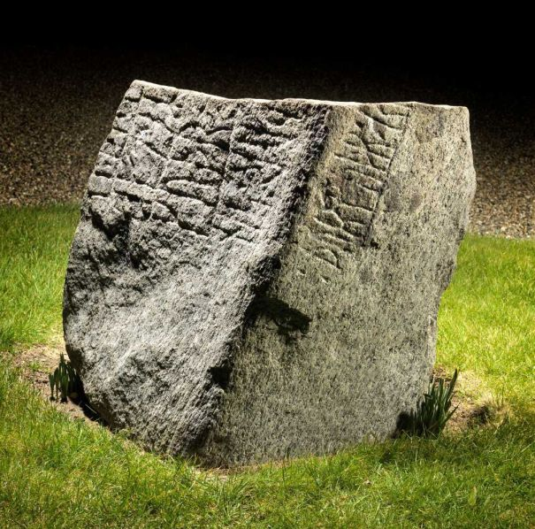
Der digitalen Sammlung des dänischen Nationalmuseums entnommen. - Lizenz: CC-BY-SA
Im Rahmen meiner 2022er Jütland Wikingertour war ich am Mittwoch, 01.06.2022, vor Ort. Dabei konnte diese Fotografien anfertigen.
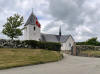 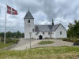 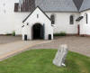 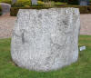 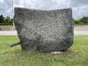 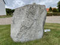 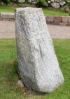 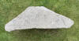


Die Informationen zu diesem Runenstein aus der dänischen Runendatenbank finden sich hier.
Der entsprechende Eintrag in "Fund og Fortidsminder" ist hier verlinkt. Darin ist auch ein Zustandsbericht des Steinrestaurators Leif Vognsen aus dem Jahr 2018 eingebettet.
Über diesen Link finden sich zu dem Runenstein Informationen des Forschungsprojektes "Runes" der Akademie der Wissenschaften zu Göttingen.
Literaturhinweise:
Lidt om Runeskriften og Runestensfundet i Hurup von Fr. Orluf - aus: Historisk Aarbog for Thisted Amt 1911, S. 52-68
Aarbøger for nordisk oldkyndighed og historie, 3. Reihe, 3. Band - Lis Jacobsen - 1913 - Artikel: "Nyfundne Runeindskrifter i Danmark" (ab der S. 109 über den Runenstein von Hurup).
Thylands runestene - Anders Bæksted, 1947,
Landet mod Nordvest, Band 1, Seite 69-84 - darin u.a. auch der
Hurup Runenstein
Runestenen i Hurup von Jytte Nielsen, Heltborg Museum,
Sydthy Årbog, 2000, S. 6-7
Auf den Webseiten des Nationalmuseum in Kopenhagen - Danmarks Kirker - kann man eine in dänischer Sprache gehaltene 10-seitige, bebilderte Abhandlung als pdf-Datei zur Baugeschichte/Innenausstattung der Kirche von Hurup aus den Jahren 1942 abrufen.
Über die Webseite des "Aalborg Stift" kann man umfangreiche Informationen zur Hurup Kirche - in dänischer Sprache - abrufen.